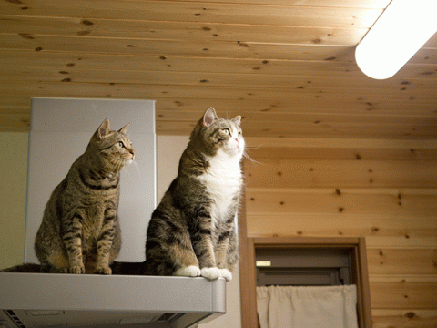
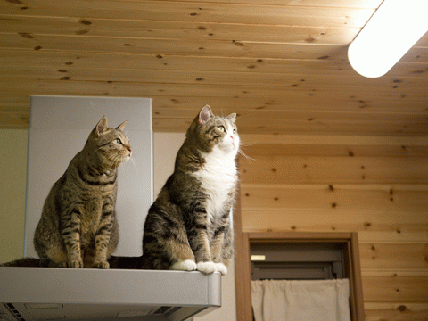
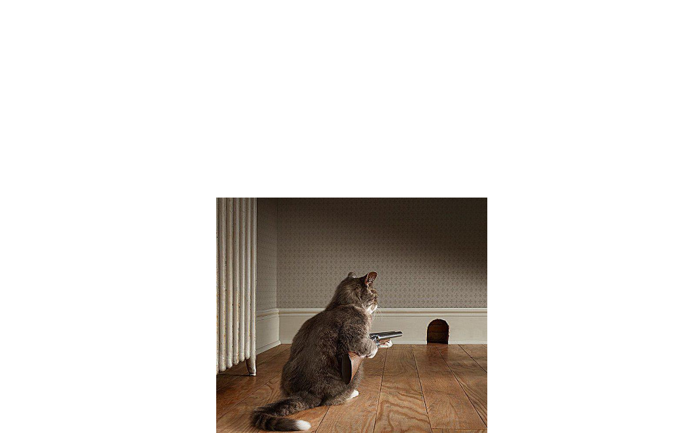
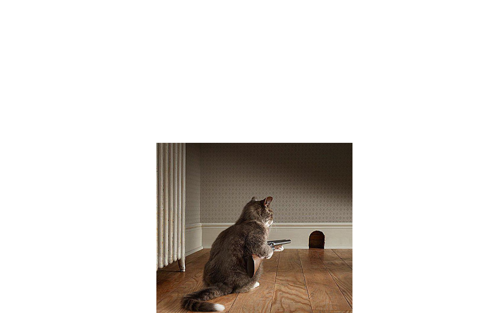

# create an image, name it web_server
docker build -t web_server .
# create a container, name it web_server
docker run --name web_server web_server
 

Deis, Flynn, Paz, Mesos + Marathon
deis builds:create -a my-omg-lol-app
deis scale cmd=100 -a my-omg-lol-app